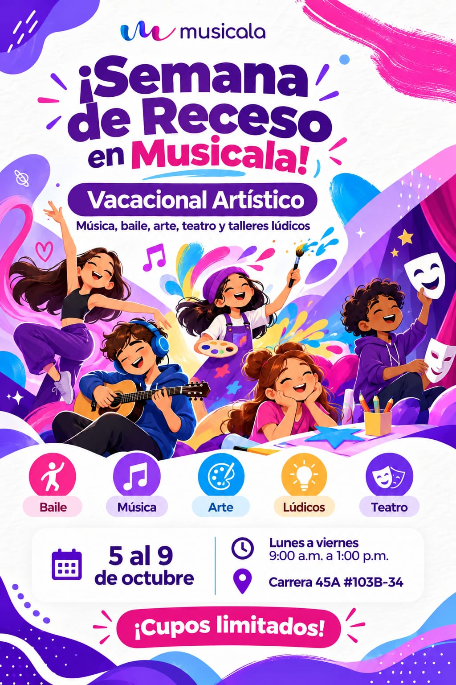

VACACIONES ARTÍSTICAS · MUSICALA
Artejuegoy exploración
Una experiencia integral para niños y jóvenes de 4 a 15 años, con música, baile, teatro, artes plásticas y actividades lúdicas.

ESCOGE LA TEMPORADA
La página cambia contigo
Fechas, semanas, contenidos y precios se reorganizan según el ciclo que quieras consultar.
POR QUÉ MUSICALA
Vacaciones con propósito, sin volverlas otro colegio
Tomamos lo mejor del brochure 2026: una experiencia comercialmente clara, pero con una propuesta pedagógica de verdad.
Semanas independientes
Cada semana tiene inicio, desarrollo y cierre. Se puede asistir a una o varias.
3 lenguajes artísticos al día
Artes, exploración corporal y música, más juego y convivencia.
Aprendizaje real
Técnica, teoría vivencial y proyectos, adaptados a la edad y al grupo.
Cuidado humano
Escucha, límites claros, respeto y acompañamiento emocional.
Resultados visibles
Cada ciclo puede cerrar con una muestra, galería, escena, coreografía o ensamble.
Flexibilidad
Si hay festivos o cambios de calendario, reorganizamos sin perder la intención pedagógica.
QUÉ EXPLORAMOS
Tres mundos artísticos + juego
Cada jornada conecta diferentes disciplinas en proyectos que sí tienen sentido entre sí.


CONTENIDOS EN DETALLE
¿Qué aprenden exactamente?
Conservamos la profundidad pedagógica de la página original, pero la escondimos civilizadamente dentro de acordeones.
🎭 Exploración CorporalDanza + Teatro
Técnica
- Movilidad y calentamiento seguro.
- Marchas, diagonales, saltos y giros.
- Ritmo corporal y coordinación.
- Latinos, urbanos y folclor adaptado.
- Uso del espacio y niveles escénicos.
Teoría vivencial
- Ritmo, secuencia, pulso y direcciones.
- Conciencia corporal y musicalidad.
- Atención, escucha y reacción.
- Personaje, intención y ritmo dramático.
Obras
- Mini-coreografías.
- Micro-escenas e improvisación.
- Movimiento + emociones.
- Trabajo en dúos y tríos.
🎵 Exploración MusicalUn foco diferente cada día
Respiración, proyección, afinación y gimnasia vocal.
Patrones rítmicos, coordinación e independencia de manos.
Patrones de 3, 4 y 5 notas y coordinación mano-dedo.
Postura, acordes básicos y rasgueos.
Integración, escucha, entradas y finales.
Lectura
Notas, pentagrama, direccionalidad melódica y lectura simple.
Ritmo
Pulso, negra, blanca, corcheas, ecos y juegos corporales.
Repertorio
Canciones progresivas y obras sencillas que unen técnica y teoría.
🎨 Artes PlásticasTécnica + teoría + producción
Técnica
- Dibujo y control de presión.
- Pintura, acuarela y mezcla de colores.
- Modelado y volumen.
- Collage y reciclaje creativo.
Teoría
- Color y armonías.
- Línea, forma, textura y espacio.
- Composición y centro de interés.
- Apreciación artística.
Producción
- Mini-galerías.
- Personajes.
- Escenografías.
- Esculturas y técnicas mixtas.
🎲 Talleres LúdicosJuego + convivencia + mini-proyectos
Juegos cooperativos, retos creativos, dinámicas teatrales y musicales, pausas activas, bienestar, socialización guiada y habilidades socioemocionales.
DISTRIBUCIÓN DIARIA
4 horas con sentido
Artes Plásticas
Danza + Teatro
Música
Onces
Lúdica
SEMANA A SEMANA
La temporada se organiza así
TEMPORADA
Planes y valores
Beneficios que pueden aplicar
👧👦 Hermanos🤝 Referidos⏰ Pago anticipado✨ Promociones de temporada
Los beneficios dependen de las condiciones vigentes de cada temporada.
GALERÍA 2026
Así se viven nuestros Vacacionales
Estas imágenes muestran experiencias reales de Musicala. El álbum de Google Fotos corresponde a temporadas anteriores de 2026; no son fotos del receso de octubre, porque todavía no ha sucedido.
📷 Abrir galería completa 2026Para acudientes
Si una semana incluye festivo, reorganizamos sin perder la intención de las actividades. Cada semana tiene un cierre propio.
Musicala Fest
La participación en muestras o Fest es opcional y se adapta al tiempo y comodidad de cada familia.
Ambiente seguro
Acompañamiento, escucha, respeto y libertad para crear sin presión por “hacerlo perfecto”.
CUPOS LIMITADOS
Reservar cupo
Arte para disfrutar las vacaciones de verdad
Escoge tu temporada y escríbenos para confirmar cupo.